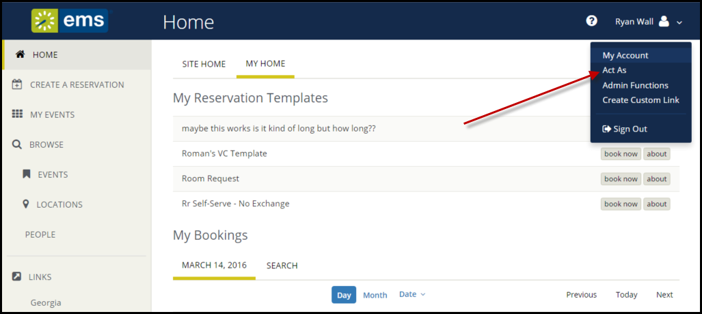

You may want to designate another
You begin by adding one or more EMS users to act as your delegate. Then they can log in and request to "Act As" you. You can keep track of their actions on your behalf, and any event invitations, cancellations, changes, room requests, service requests, and so on that they create on your behalf will appear to other EMS users as yours.
A delegate is another authorized user who can act as you in EMS Web App and carry out actions on your behalf. To delegate users, first you add them to your account as delegates under My Account. Then they can use the Act As option and select your name.

Once activated, the user you are acting as will show in the upper-right corner of the